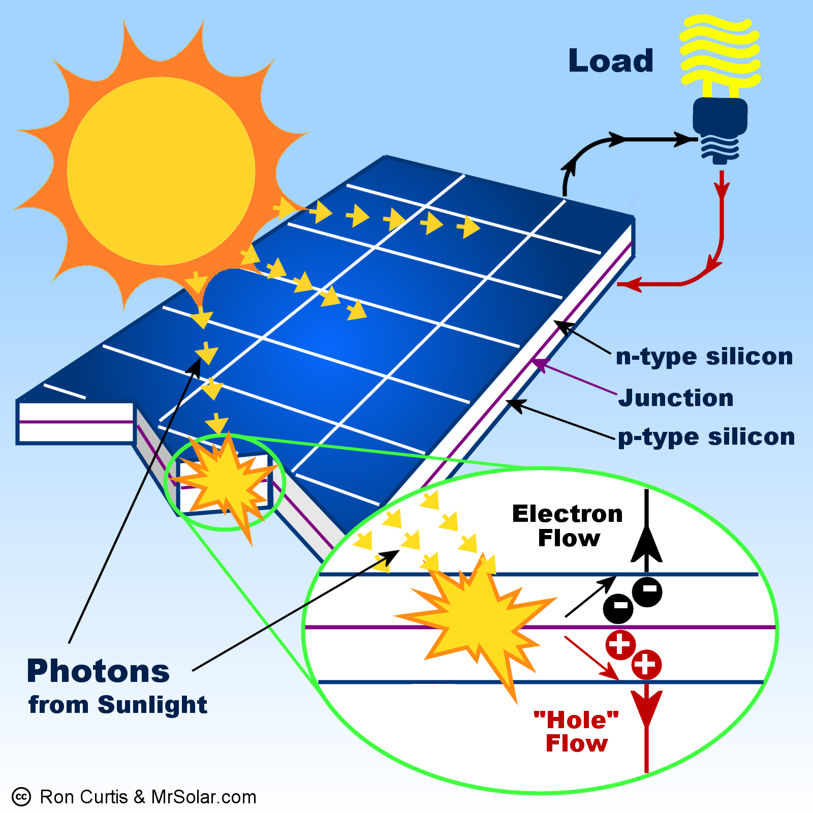

Life-Giving Star
The sun is the star that is in the center of the solar system. Without it, we wouldn't be here. The sun's light is the basis of life on earth. Plants takes the sun's energy to make food, which moves up the food chain, supplying energy through every level. The sun releases lots of energy in the form of light and heat. We recieve about 170,000 terawatts of energy continously. There's a lot of potential energy waiting to be harvested
The Solar Panel
The solar panel is the most popular method of harvesting the sun's energy. It uses the sun's light to knock off electrons from a thin layer of silicon in order to generate a (direct) current. This is called the photovoltaic effect. This isn't the only method of using the sun's power. Ancient man focused the sun's rays toward flammable materials in order to start fires for cooking. In the third century B.C.E., the ancient Greeks used this principle to start fires for religious ceremonies. The photovoltaic effect was discovered in 1839 by Edmond Becquerel. Selenium was found to be a photoconductor by Willoughby Smith in 1873. The photovoltaic effect was applied by William Grylls Adams and Richard Evans Day, and they were able to demonstrate that it did in fact generate electricity. In 1883, Charles Fritz invented the first working solar cell, using selenium instead of silicon. The modern cell made of silicon was invented in Bell Labs by three scientists which were Daryl Chapin, Calvin Fuller, and Gerald Pearson.
Pros and Cons of Solar Energy
| Pros | Cons |
|---|---|
| Clean and sustainable | Depends on the weather |
| Saves on electricity bills | High initial cost |
| Cheap maintenance | Not portable |
| Modern panels are getting better | Disposal of toxic materials |
Pro 1: Clean and sustainable
Solar panels harvest energy directly from the sun and does not involve any burning. There is no fuel required, and there is no air pollution.
Con 1: Depends on the weather
Like wind energy, solar energy is dependent on good weather to generate the maximum amount of power. While solar power can also generate power in cloudy or rainy weather, it is far less than on a perfect day. It also cannot generate power in the night. This can be mitigated by a battery, but solar batteries are costly.
Pro 2: Saves on electricity bills
Depending on how large the system is, you can reduce your electricity bills to zero for the entire lifespan of your solar system. It also protects against fluctuating energy prices.
Con 2: High initial cost
The energy savings depend on the size of the system, as well as the presence of batteries. This adds up to a large initial cost, which can put off some people.
Pro 3: Cheap maintenance
Since solar power does not have any moving parts, maintenance consists only of wiping them every few months to clear dust.
Con 3: Not portable
Most solar systems are attached to the roof of the house. This means that taking it off would damage the roof and the panels themselves, making it not worth it to move them to a new house.
Pro 4: Modern panels are getting better
Advances in technology means that solar panels now have higher efficiency
Con 4: Disposal of toxic materials
Some components of solar systems are toxic, especially the components of the solar battery. The long life of a system mitigates the effects of these components.